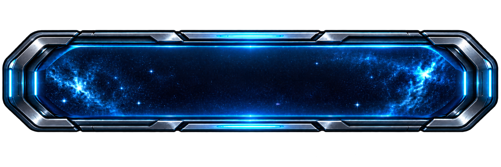
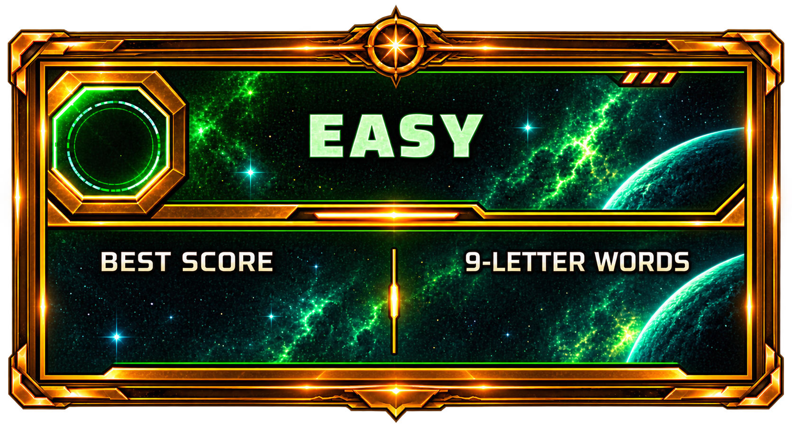
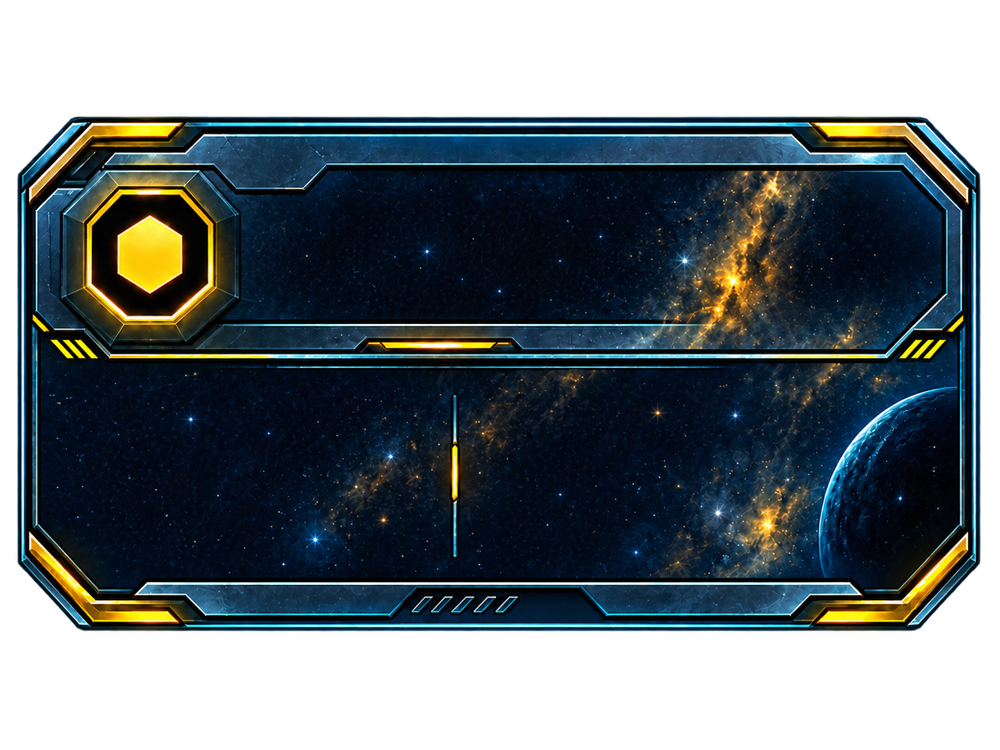
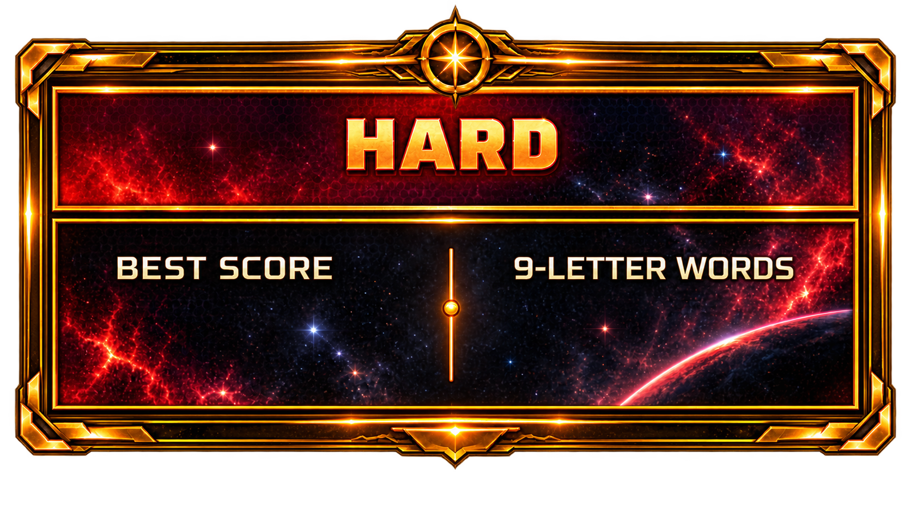

ANAGRAM QUEST
WORDS
MAKE A
BRIGHTER
UNIVERSE
ANAGRAM QUEST
SOLVE WORDS • SCORE HIGH • EARN INTELLIGENCE XP
DIFFICULTY STATS
WELCOME BACK,
Player
High Score
0
Games Played
0

START GAME
A SHARPER YOU AWAITS
RULES
How To Play
Pick 9 letters — press V for a vowel or C for a consonant each round.
Build the longest real word you can from your letters.
Lock in early once you're happy, or let the clock run out.
5 rounds per game, then one big final round.
Scoring
4-6 letter words score points equal to their length.
7-letter words score 10, 8-letter score 12, 9-letter score 18.
Invalid words or fewer than 4 letters score 0.
Your total score converts to Intelligence XP based on difficulty.
Rounds
Rounds 1-4: pick letters, then build a word before time runs out.
Timer length depends on difficulty (Easy / Medium / Hard).
No hints on validity — whatever's in the boxes when time hits 0 is what counts.
Final Round
Round 5 is a single scrambled 9-letter word — no letter selection.
Solve it for a flat 30 points — more than a 9-letter word anywhere else.
The clock cannot be skipped or ended early on this round.
Every valid solution is revealed afterwards, win or lose.
← BACK TO ARCADE
•
LEADERBOARDS
CHOOSE YOUR DIFFICULTY
Less time, more Intelligence XP per point.

0
0

0
0
Unlocks at Intelligence Level 5

0
0
Unlocks at Intelligence Level 40
← BACK
ANAGRAM QUEST
EASY
GAME STARTING
EASY
Round
1
of 5
It's your go. Please select nine letters.
SELECT YOUR LETTERS
10
Time left:
10
V
C
EASY
Round 1 of 5
Build the longest word you can.
❌
Backspace
30
LOCK IN
Time left:
30
EASY
You submitted a 6 letter word:
Points earned:
6 POINTS
Correct answer:
NEXT ROUND
Time left:
0
GAME OVER
EASY
Player
:
0
ROUND 1
0
ROUND 2
0
ROUND 3
0
ROUND 4
0
ROUND 5
0
TOTAL POINTS
0
BACK TO LOBBY